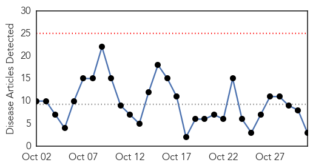
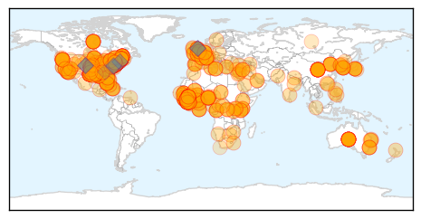

Influenza
30-Day Web Trend
0 alerts, 0 warnings

30-Day Twitter Trend
1 alerts, 0 warnings

Article Locations

Article Confidences
Top Articles:
Top Tweets:
- 0.570
- Flu Fact Friday: Vaccination is recommended every year in order to protect against the mutating influenza virus. http://t.co/KJrEUr9Jmp
Ebola
30-Day Web Trend
25 alerts, 2 warnings

30-Day Twitter Trend
5 alerts, 14 warnings

Article Locations
Article Confidences
Top Articles:
- 1.000
- Nov. 15, 2014
- 1.000
- Worst Ebola outbreak on record tests global response - World
- 1.000
- Latest Ebola News: Scientists reveal role of genes in body's response to Ebola
- 1.000
- Ebola in US: West Africans in New York face Ebola stigma
- 1.000
- Ebola in US: Obama campaigns in Maine, avoids Ebola controversy
- 1.000
- NZ prepared for Ebola
- 1.000
- Woman being monitored for Ebola in Oregon hospitalized
- 1.000
- News Guide: A look at latest Ebola developments
- 1.000
- Experts urge caution over Ebola hopes
- 1.000
- Mt. SAC professor backs new state Ebola quarantine guidelines
- 1.000
- Let’s Talk about Ebola Survivors and Sex
- 1.000
- How are Ebola patients' footsteps traced?
- 1.000
- Maine Voices: To fight epidemic of fear, we must be guided by science, not emotion
- 1.000
- Ebola Continues to Spread Among Health Care Workers
- 1.000
- Pakistan Today
- 1.000
- Experts urge caution over Ebola hopes
- 1.000
- The Evidence Demands Ebola Quarantines
- 1.000
- Risk of Ebola low, yet county preps
- 1.000
- Ebola Outbreak in Liberia May Be Slowing: WHO
- 1.000
- Experts urge caution over Ebola hopes
- 1.000
- Can You Really Get Ebola from a Sneeze?
- 1.000
- Health Dept.: Person monitored for Ebola tests positive for malaria after traveling to West Africa
- 1.000
- Woman being monitored for Ebola in Oregon hospitalized
- 1.000
- In Guangdong, nervy Chinese ramp up Ebola watch
- 1.000
- Ebola outbreak unlikely in Australia but no room for error, experts warn
- 1.000
- In Guangdong, nervy Chinese ramp up Ebola watch
- 1.000
- The most from the coast
- 1.000
- The most from the coast
- 1.000
- Canada bans travelers from Ebola hot spots
- 1.000
- Canada bans travelers from Ebola hot spots
- 1.000
- Nation torn on returning Ebola workers
- 1.000
- GlaxoSmithKline plc (ADR)(NYSE
- 1.000
- Ebola screening trickles down to doctors' offices, care clinics
- 1.000
- Experts urge caution over Ebola hopes
- 1.000
- UN official: No need to quarantine everyone from Ebola hotspots
- 1.000
- Ebola crisis: US judge eases quarantine limits on nurse Kaci Hickox, who treated Sierra Leone patients
- 1.000
- News Guide: A look at latest Ebola developments
- 1.000
- Fear Ebola? Doctors say get flu shot
- 1.000
- Ohio State establishes Ebola virus reporting process
- 1.000
- Medical Science Doesn’t Support Official Rhetoric On Ebola
- 1.000
- Ebola is minor threat locally, but health officials are ready
- 1.000
- Fearing Ebola? Doctors say get a flu shot
- 1.000
- Vermonter voluntarily quarantined after trip to West Africa
- 1.000
- News Guide: A look at latest Ebola developments
- 1.000
- News Guide: A look at latest Ebola developments
- 1.000
- Stopping Ebola: Mali Matters; Maine and Manhattan Don't
- 1.000
- New York doctor with Ebola improves, nurse reunited with dog
- 1.000
- Inside the world's worst Ebola outbreak
- 1.000
- First Ebola Suspect Hospitalized in Finland
- 1.000
- Finland prepares to treat first suspected Ebola patient
Showing top 50 articles...
Top Tweets:
- 0.980
- A reminder from: Flu & Ebola have some similar symptoms, but flu is common, Ebola is very rare. http://t.co/5SfTXavG6U getafluvax
- 0.933
- Mali identifies two suspected Ebola cases; Strategies for containing Ebola in W. Africa. HealthSecurity http://t.co/H1JhGDbj22
- 0.931
- Click the link n read. Update urself on d outbreak n share d message. supportTAE Ebola virus outbreak http://t.co/C9E1u1FncR via
- 0.916
- BBC News - Ebola outbreak: UK aid ship docks in Sierra Leone http://t.co/oar05trIQA
- 0.911
- Watch new Ebola Q&A w/CDC’s Dr. Srinivasan on caring for patients during flu season. Travel history key: http://t.co/3Cdl68bPxK
- 0.910
- Inference and Forecast of the Current West African Ebola Outbreak in Guinea, Sierra Leone and Liberia http://t.co/CrHiXX4ZRJ
- 0.827
- Ebola update from: 13,567 known cases, 4951 deaths. All contacts of Spanish nurse have cleared 21 days http://t.co/mMW9JT0bfb 1/n
- 0.821
- UN launches Ebola Gender Mainstreaming Strategy in Sierra Leone http://t.co/QEk3PzM15T
- 0.809
- .@WHO chief says Ebola response ‘did not match’ scale of the outbreak http://t.co/qSZelsJKym TackleEbola
- 0.802
- Webinars. Training Health Workers for Ebola ebolaresponse http://t.co/xduIHybaoG
- 0.793
- Ebola: Danger in Sierra Leone, progress in Liberia http://t.co/nin0uOrHjG via
- 0.790
- RT: South Africa - Johannesburg: South African man who returned from Sierra Leone being tested for ebola http://t.co/clHJUBT…
- 0.773
- 3/n Healthcare infections continue to climb: 523 have contracted Ebola, and 261 have died. Tragic.
- 0.738
- RT: New Ebola numbers just out: 13567 cases, 4951 deaths."Intense transmission continues in Guinea Liberia and SL" http://t.co/Pgg…
- 0.733
- So... in Ebola news, things in Liberia may be starting to look up, but what bout Sierra Leone? SL now looks worse than Liberia did.
- 0.728
- CDC Drs. Alison & Neil give training to help stop spread of Ebola among healthcare workers in Liberia. CDCintheField http://t.co/Q2NrYbujom
- 0.717
- RT: The world is close to an Ebola vaccine, human trials have already started & there is possibility of a Vaccine by December Ebo…
- 0.688
- Sierra Leone’s fight against Ebola infection: ‘The world is not safe’ http://t.co/fWIOnZiTTz
- 0.688
- Sierra Leone’s fight against Ebola infection: ‘The world is not safe’ http://t.co/NtNedMUEyW TackleEbola
- 0.660
- RT: Les plus grands de la chanson africaine s'unissent pour parler d'Ebola AfricaStopEbola Afrique http://t.co/2XPtIP40lz
- 0.658
- AFD Blog `@WHO Ebola Response Situation Report – Oct 31st' http://t.co/32yjkthvIn
- 0.657
- Liberia's Ebola progress real, but epidemic far from under control http://t.co/xjnIABjUHf
- 0.652
- Canada's suspension of visas for people from Ebola-affected countries violates International Health Regs: Expert http://t.co/iL9dqOVX8N
- 0.646
- Ebola imposes substantial loss in household incomes in Guinea, Liberia and Sierra Leone ebolaresponse UNDP http://t.co/g1V2qRBg52
- 0.640
- A Rapid Response to Ebola http://t.co/9iBQ1Q6azX
- 0.638
- Portraits. Braving Ebola http://t.co/VFSBvxIqOA
- 0.623
- They work toward a time after Ebola. Moving profiles of those providing frontline Ebola care in Liberia: http://t.co/cHF37teh2D
- 0.611
- RT: Ebola in Sierra Leone: New outbreak manager calls for change of attitude http://t.co/8NlkCc3Gf2
- 0.568
- Ongoing Ebola outbreak in W. Africa is largest & most-protracted ever recorded. Be part of solution: http://t.co/TLqVpENLQO FightingEbola
- 0.567
- RT: Georgia politician - Obama deliberately spreading Ebola, but epidemic might be way to deal w homosexuals. @Salon htt…
- 0.559
- USA. Maine Judge Rejects Ebola Quarantine for Nurse ebolaresponse http://t.co/WPiQ3dbMi3
- 0.555
- Nurse Kaci Hickox defies Ebola quarantine http://t.co/Yuls8l8v6j
- 0.549
- Ebola : 100 millions de dollars supplémentaires annoncés par la Banque mondiale http://t.co/UB5hH527vr
- 0.547
- Morning all. Thinking of Africa, Thinking of West Africa a Ebola affected Regions Thinking of Sierra Leone, Guinea, Liberia and Mali
- 0.545
- Move by Canada, Australia to bar people from Ebola-affected countries threatens International Health Regs: Expert http://t.co/7BpMWPuO3i
- 0.532
- AFD Blog `@WHO Video: Updated Recommendations For PPEs For Current Ebola Outbreak' http://t.co/QdrS9ZLOZi
- 0.525
- RT: Proud to join the President & recognize our American health care workers & their efforts to stop ebola outbreak. https://t…
- 0.510
- Ebola in Liberia – Malaria must be treated too http://t.co/nsvi0xnEIW